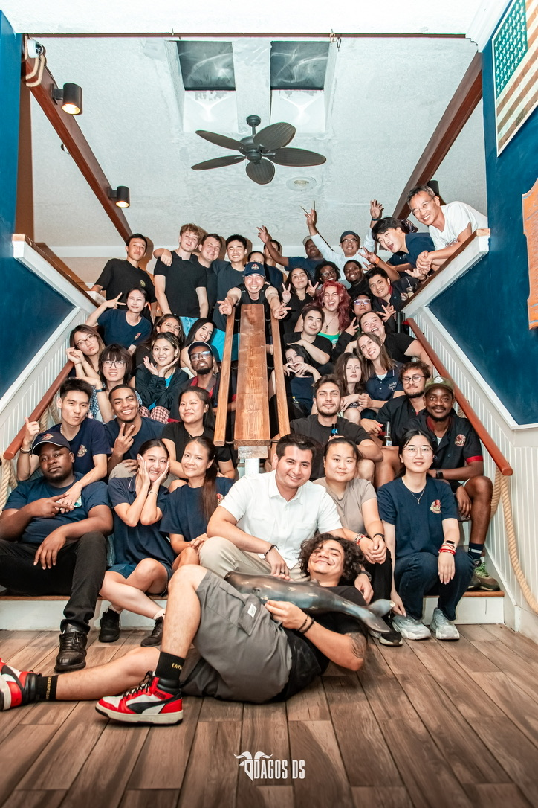

Business & operations
October 2021 — Present
Co-founder & Operations Lead
Chamberstone’s
Hospitality Group
I’ve learned this business by doing the work.
I started after school in Manhattan. Today, I work across branding, staffing, and operations for a hospitality group in New Jersey and New York City.
- Give it an identity.
- Naming concepts, designing logos and menus, creating in-store materials, and building websites.
- Get the team ready.
- Hiring, scheduling, and training staff—from learning the menu to getting comfortable with the systems.
- Make it all work.
- Building Toast POS menus, connecting printers, teaching the point-of-sale system, and coordinating with accountants.

OC Lobster Pot / The people
The people
behind the service.
Hiring and training are only part of it. I care about building a team that supports one another—and a place people enjoy showing up to.
These are the people I get to work alongside.
Selected hospitality work
Restaurants & a place to stay